Ooba Mobile App
OOBA is a social connection app designed to help people in midlife build meaningful relationships through shared interests, experiences, and values. As life becomes busier and social circles naturally shrink, many people find it harder to form genuine connections beyond superficial interactions.
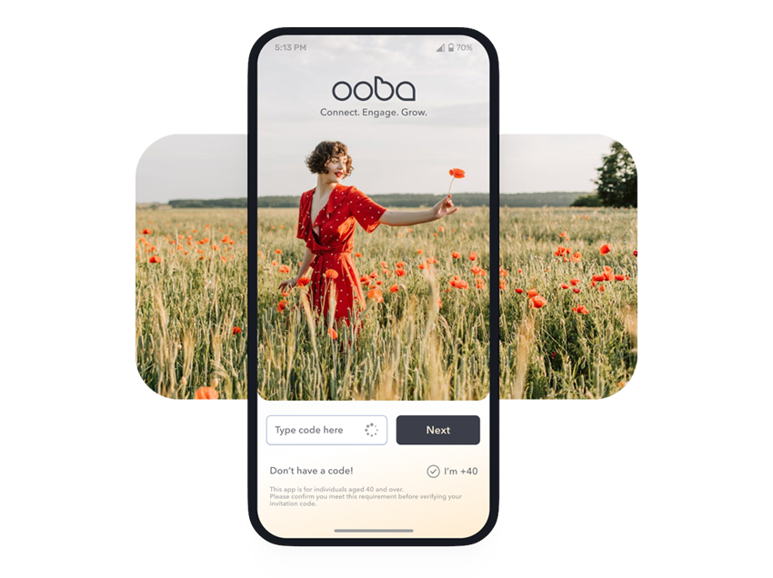
01. Scope
The goal of OOBA is to create a calm, trusted, and intentional space where users can connect in a more human way. Instead of endless scrolling or algorithm-driven matching, the app focuses on real-life interests, group activities, and shared experiences — from sports and hobbies to conversations and everyday moments.
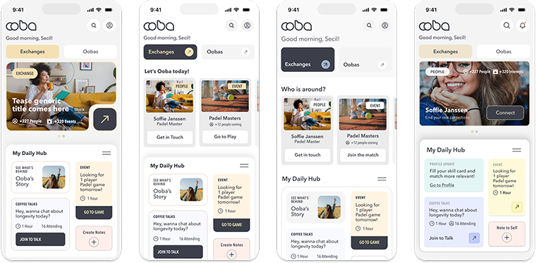
02. Discovery Phase
Problem Statement
Existing platforms encourage quantity over quality, leaving midlife adults craving deeper,
context-rich social experiences.
As a result, users are often exposed to endless interactions without trust,
shared purpose, or a clear path from online engagement to meaningful real-world connection.
of midlife adults say social media does not reduce their loneliness, despite regular use.
Meaningful, context-rich interactions increase emotional satisfaction by 60%, compared to passive social feed engagement.
Solution Hypothesis
By creating an interest-centered platform that prioritizes shared activities and emotional safety, midlife adults will form more meaningful relationships than they would with conventional social networks.
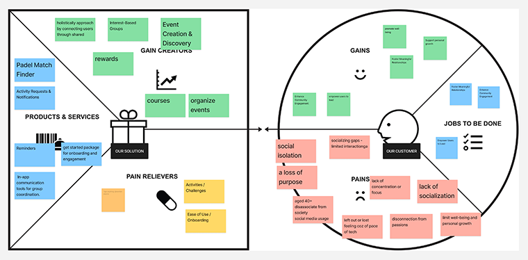
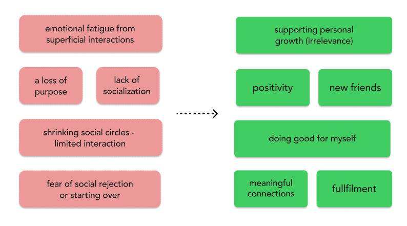
Key Features to Start
These key features were selected to help users quickly connect around shared interests and passions. They are designed to foster engagement, community building, and meaningful social interactions from the very start.
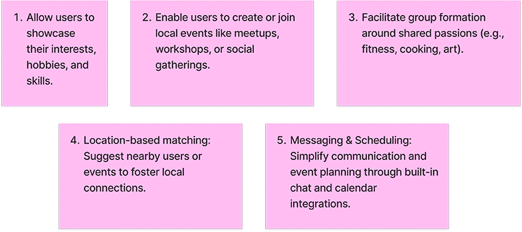
03. Onboarding Phase
New User Flow
The onboarding journey not only introduces the app but also adapts dynamically to the user’s preferences, creating a personalized and engaging first impression.
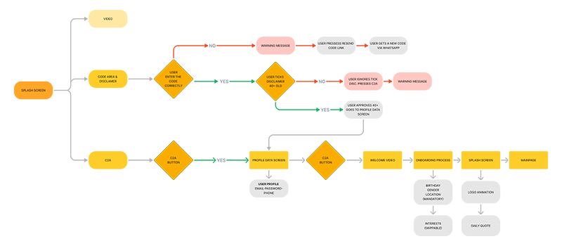
03.1 Wireframes
This onboarding experience that minimizes cognitive load while keeping user engagement high. By applying the modern 4+1-1 approach, we ask only the essential questions, avoiding the paradox of choice. Each step in the onboarding flow is strategically placed to gather insights without overwhelming the user. This approach ensures users feel guided, understood, and ready to explore the app’s social and wellness features effortlessly.
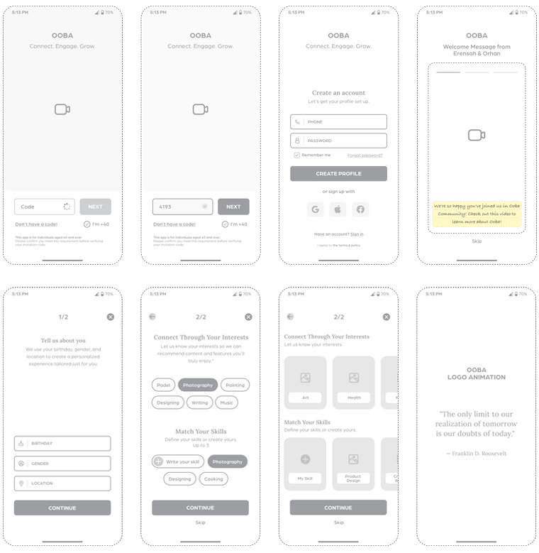
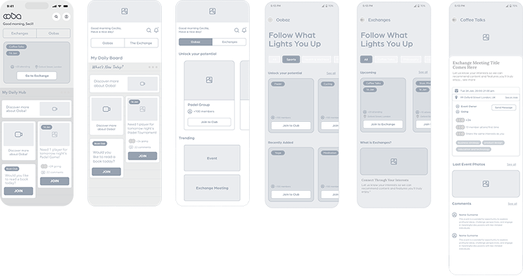
03.2 Mockups
Onboarding
The accompanying mockups illustrate the smooth onboarding flow, showing how each screen guides the user through essential steps without overwhelming them. Visual hierarchy and clear microcopy ensure that interactions feel intuitive, while the layout supports quick understanding of the app’s social and wellness features.
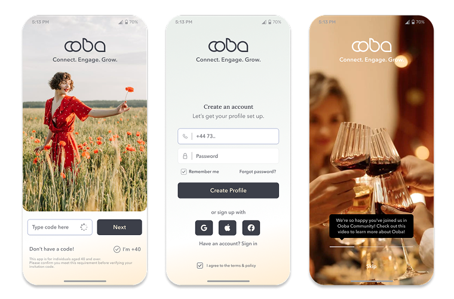
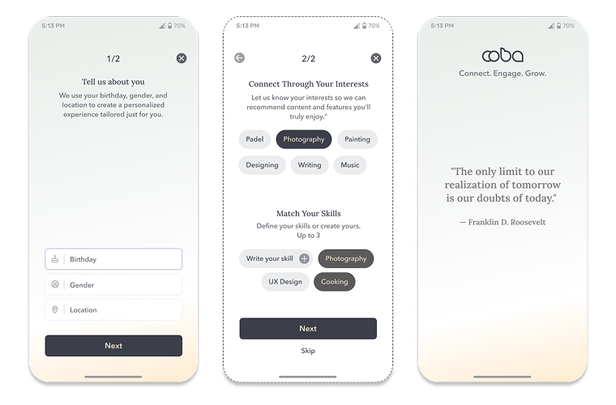
Exchanges
The “Exchanges” feature enables users to discover and connect with others based on shared interests, skills, and perspectives. Through interactive modal cards, users can explore curated groups, relevant activities, and like-minded people in a playful and intuitive way. The experience allows users to seamlessly join groups, create events, and start conversations, all within a unified flow. This design encourages meaningful interactions while keeping the discovery process engaging and easy to navigate.
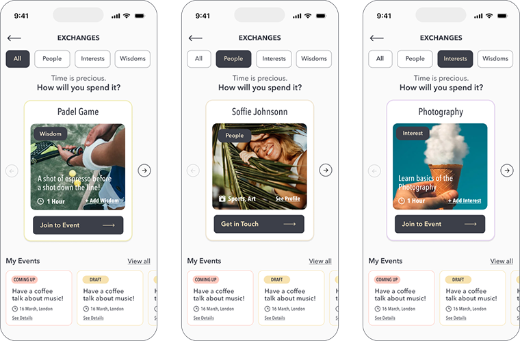
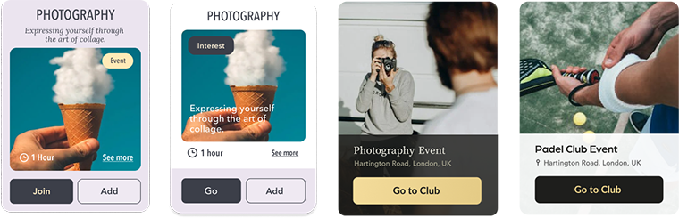